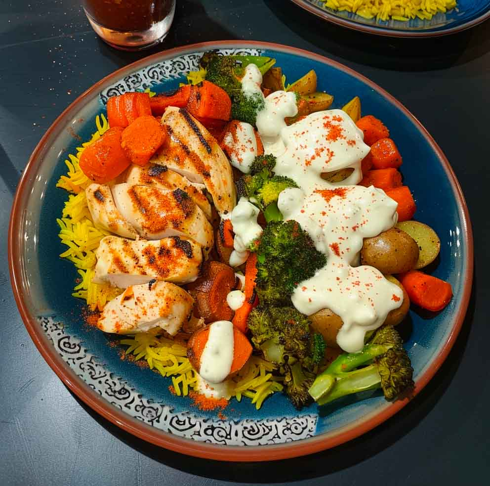
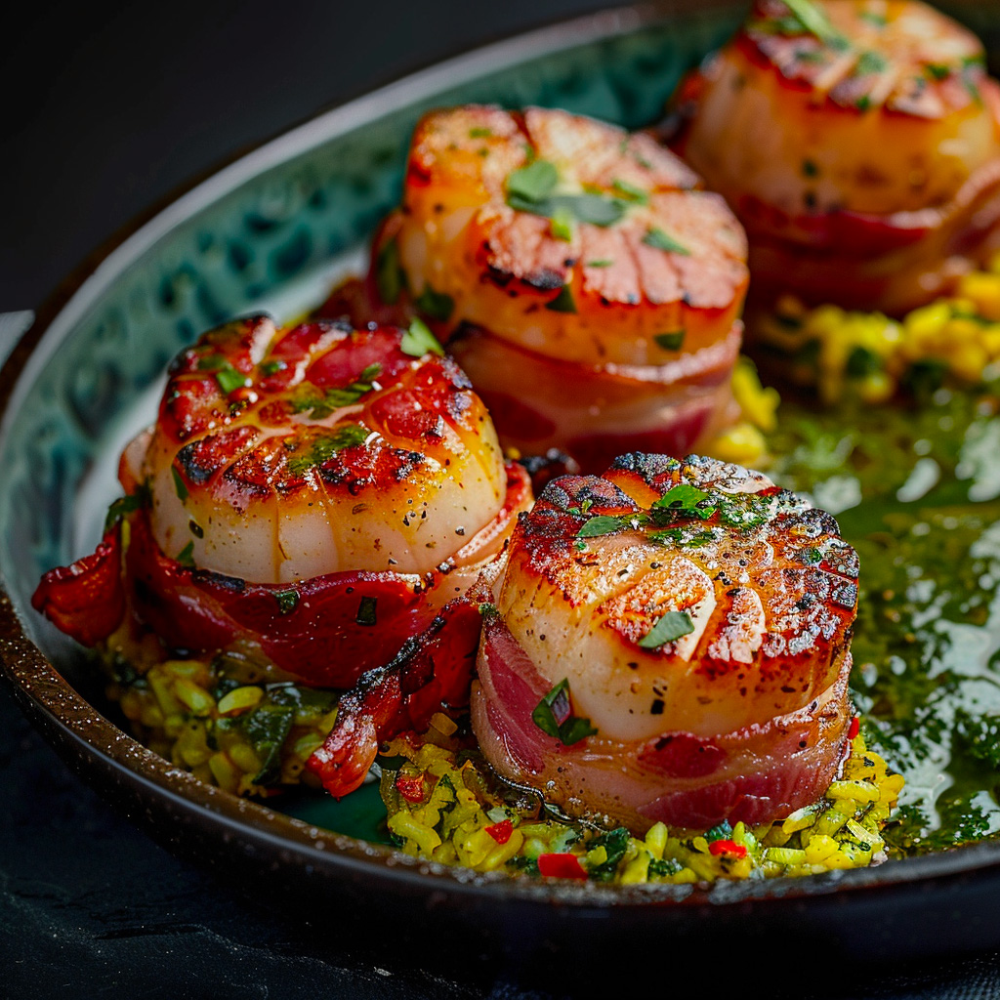
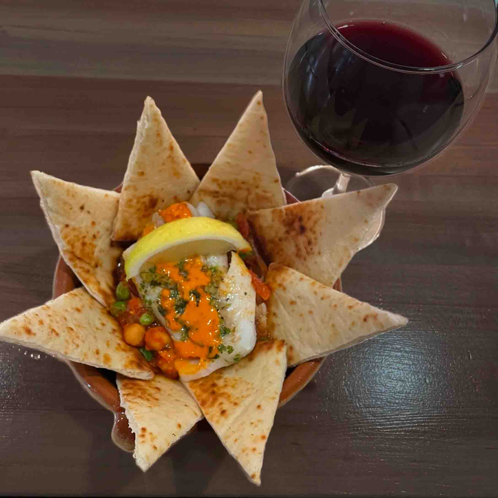

Featured Menu Items

Chicken Shawarma Seasonal vegetables, saffron rice, harissa
Tapas Skewers Pincho de Carne(Small Meat Skewers)

Scallops Con Tocino Delicious Bacon-wrapped scallops, saffron rice, mojo verde.
Hummus con Bacalao-Creamy hummus base, Poached white fish on top, Spicy herb olive oil drizzle, Chickpea and lemon garnish